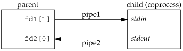

15.4. CoprocessesA UNIX system filter is a program that reads from standard input and writes to standard output. Filters are normally connected linearly in shell pipelines. A filter becomes a coprocess when the same program generates the filter's input and reads the filter's output. The Korn shell provides coprocesses [Bolsky and Korn 1995]. The Bourne shell, the Bourne-again shell, and the C shell don't provide a way to connect processes together as coprocesses. A coprocess normally runs in the background from a shell, and its standard input and standard output are connected to another program using a pipe. Although the shell syntax required to initiate a coprocess and connect its input and output to other processes is quite contorted (see pp. 6263 of Bolsky and Korn [1995] for all the details), coprocesses are also useful from a C program. Whereas popen gives us a one-way pipe to the standard input or from the standard output of another process, with a coprocess, we have two one-way pipes to the other process: one to its standard input and one from its standard output. We want to write to its standard input, let it operate on the data, and then read from its standard output. ExampleLet's look at coprocesses with an example. The process creates two pipes: one is the standard input of the coprocess, and the other is the standard output of the coprocess. Figure 15.16 shows this arrangement. The program in Figure 15.17 is a simple coprocess that reads two numbers from its standard input, computes their sum, and writes the sum to its standard output. (Coprocesses usually do more interesting work than we illustrate here. This example is admittedly contrived so that we can study the plumbing needed to connect the processes.) We compile this program and leave the executable in the file add2. The program in Figure 15.18 invokes the add2 coprocess after reading two numbers from its standard input. The value from the coprocess is written to its standard output. Here, we create two pipes, with the parent and the child closing the ends they don't need. We have to use two pipes: one for the standard input of the coprocess and one for its standard output. The child then calls dup2 to move the pipe descriptors onto its standard input and standard output, before calling execl. If we compile and run the program in Figure 15.18, it works as expected. Furthermore, if we kill the add2 coprocess while the program in Figure 15.18 is waiting for our input and then enter two numbers, the signal handler is invoked when the program writes to the pipe that has no reader. (See Exercise 15.4.) Recall from Figure 15.1 that not all systems provide full-duplex pipes using the pipe function. In Figure 17.4, we provide another version of this example using a single full-duplex pipe instead of two half-duplex pipes, for those systems that support full-duplex pipes. Figure 15.16. Driving a coprocess by writing its standard input and reading its standard output Figure 15.17. Simple filter to add two numbers
#include "apue.h"
int
main(void)
{
int n, int1, int2;
char line[MAXLINE];
while ((n = read(STDIN_FILENO, line, MAXLINE)) > 0) {
line[n] = 0; /* null terminate */
if (sscanf(line, "%d%d", &int1, &int2) == 2) {
sprintf(line, "%d\n", int1 + int2);
n = strlen(line);
if (write(STDOUT_FILENO, line, n) != n)
err_sys("write error");
} else {
if (write(STDOUT_FILENO, "invalid args\n", 13) != 13)
err_sys("write error");
}
}
exit(0);
}
Figure 15.18. Program to drive the add2 filter
#include "apue.h"
static void sig_pipe(int); /* our signal handler */
int
main(void)
{
int n, fd1[2], fd2[2];
pid_t pid;
char line[MAXLINE];
if (signal(SIGPIPE, sig_pipe) == SIG_ERR)
err_sys("signal error");
if (pipe(fd1) < 0 || pipe(fd2) < 0)
err_sys("pipe error");
if ((pid = fork()) < 0) {
err_sys("fork error");
} else if (pid > 0) { /* parent */
close(fd1[0]);
close(fd2[1]);
while (fgets(line, MAXLINE, stdin) != NULL) {
n = strlen(line);
if (write(fd1[1], line, n) != n)
err_sys("write error to pipe");
if ((n = read(fd2[0], line, MAXLINE)) < 0)
err_sys("read error from pipe");
if (n == 0) {
err_msg("child closed pipe");
break;
}
line[n] = 0; /* null terminate */
if (fputs(line, stdout) == EOF)
err_sys("fputs error");
}
if (ferror(stdin))
err_sys("fgets error on stdin");
exit(0);
} else { /* child */
close(fd1[1]);
close(fd2[0]);
if (fd1[0] != STDIN_FILENO) {
if (dup2(fd1[0], STDIN_FILENO) != STDIN_FILENO)
err_sys("dup2 error to stdin");
close(fd1[0]);
}
if (fd2[1] != STDOUT_FILENO) {
if (dup2(fd2[1], STDOUT_FILENO) != STDOUT_FILENO)
err_sys("dup2 error to stdout");
close(fd2[1]);
}
if (execl("./add2", "add2", (char *)0) < 0)
err_sys("execl error");
}
exit(0);
}
static void
sig_pipe(int signo)
{
printf("SIGPIPE caught\n");
exit(1);
}
ExampleIn the coprocess add2 (Figure 15.17), we purposely used low-level I/O (UNIX system calls): read and write. What happens if we rewrite this coprocess to use standard I/O? Figure 15.19 shows the new version. If we invoke this new coprocess from the program in Figure 15.18, it no longer works. The problem is the default standard I/O buffering. When the program in Figure 15.19 is invoked, the first fgets on the standard input causes the standard I/O library to allocate a buffer and choose the type of buffering. Since the standard input is a pipe, the standard I/O library defaults to fully buffered. The same thing happens with the standard output. While add2 is blocked reading from its standard input, the program in Figure 15.18 is blocked reading from the pipe. We have a deadlock. Here, we have control over the coprocess that's being run. We can change the program in Figure 15.19 by adding the following four lines before the while loop:
if (setvbuf(stdin, NULL, _IOLBF, 0) != 0)
err_sys("setvbuf error");
if (setvbuf(stdout, NULL, _IOLBF, 0) != 0)
err_sys("setvbuf error");
These lines cause fgets to return when a line is available and cause printf to do an fflush when a newline is output (refer back to Section 5.4 for the details on standard I/O buffering). Making these explicit calls to setvbuf fixes the program in Figure 15.19. If we aren't able to modify the program that we're piping the output into, other techniques are required. For example, if we use awk(1) as a coprocess from our program (instead of the add2 program), the following won't work:
#! /bin/awk -f
{ print $1 + $2 }
The reason this won't work is again the standard I/O buffering. But in this case, we cannot change the way awk works (unless we have the source code for it). We are unable to modify the executable of awk in any way to change the way the standard I/O buffering is handled. The solution for this general problem is to make the coprocess being invoked (awk in this case) think that its standard input and standard output are connected to a terminal. That causes the standard I/O routines in the coprocess to line buffer these two I/O streams, similar to what we did with the explicit calls to setvbuf previously. We use pseudo terminals to do this in Chapter 19. Figure 15.19. Filter to add two numbers, using standard I/O
#include "apue.h"
int
main(void)
{
int int1, int2;
char line[MAXLINE];
while (fgets(line, MAXLINE, stdin) != NULL) {
if (sscanf(line, "%d%d", &int1, &int2) == 2) {
if (printf("%d\n", int1 + int2) == EOF)
err_sys("printf error");
} else {
if (printf("invalid args\n") == EOF)
err_sys("printf error");
}
}
exit(0);
}
|